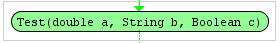
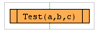

Start Element
The Start Element is necessary for starting the
flowchart Elements and it have to be at the beginning of every flowchart.
The Start Element represents a Procedure or Function, and he is the owner of all
appended Flowchart Elements.
Parameter :
You can define Parameters :
Datatypes :
| Double |
| String |
| Boolean |
| Example : |  |
Test is the name of the
"Procedure/Function"
All Parameters are local variables that can be used in the appended Flowchart
Elements.
You can use the Start Element as
"Function" with a result.
Simple Append at the end an "Retun Flowchart Element"

(For more see the Help of the "Return Element")
Start the "Start Element" with the
Boolean Input with empty Parameters
or with the "Procedure Element"
| Example : |  |